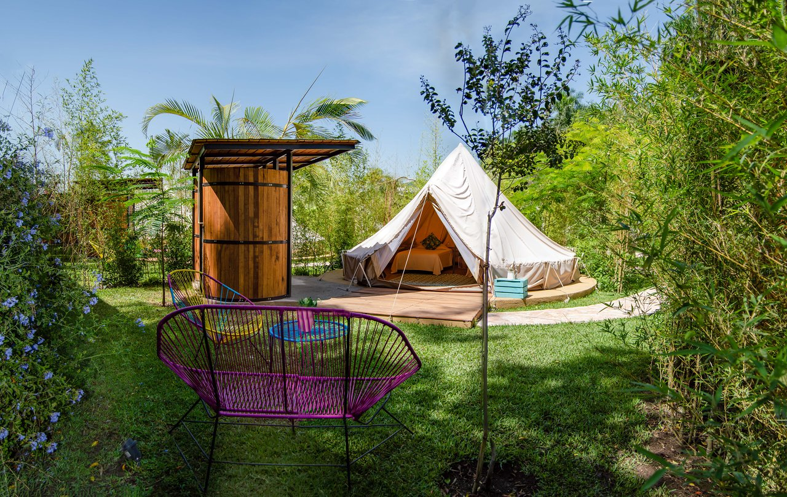

Glamping en Las Estacas
Naturaleza, comodidad y aventura en un solo lugar.
⬅️ Volver a HospedajeDetalles del Hospedaje
📍 Ubicación: Las Estacas, Tlaltizapán, Morelos
🌐 Sitio Web: www.lasestacas.com
☎️ Teléfono: +52 734 343 0700
🌟 Clasificación: 4 estrellas
Sobre el Glamping
El Glamping en Las Estacas ofrece una experiencia de alojamiento única donde el confort de un hotel se encuentra con la naturaleza del ecoparque. Las tiendas de lujo están equipadas con camas, baño privado y terrazas con vista al río.
Ubicado dentro del parque natural, podrás disfrutar de actividades acuáticas, jardines tropicales y aguas termales en un entorno ecológico y relajante.
Galería

Glamping de lujo en el corazón del ecoturismo en Morelos.